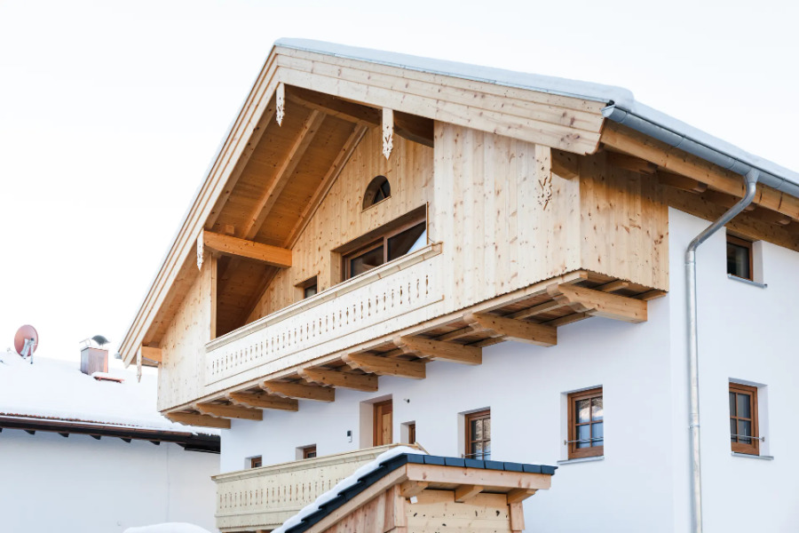
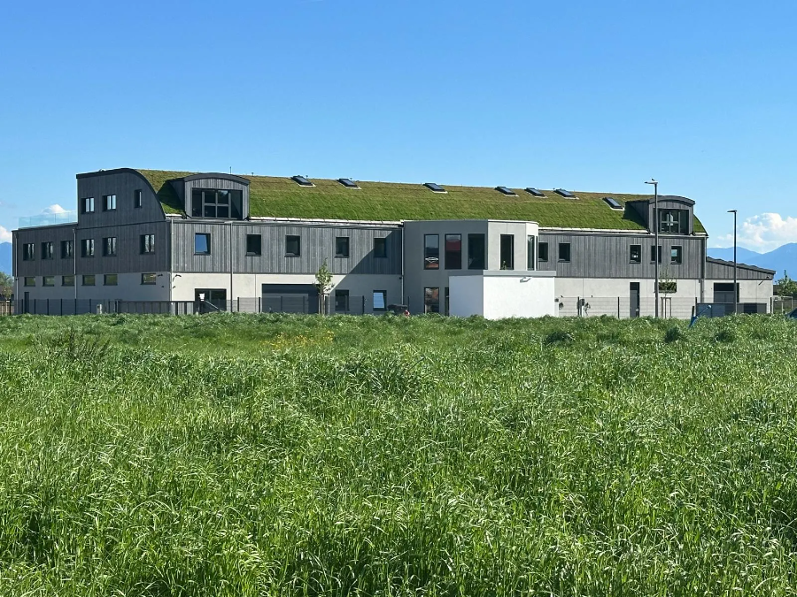
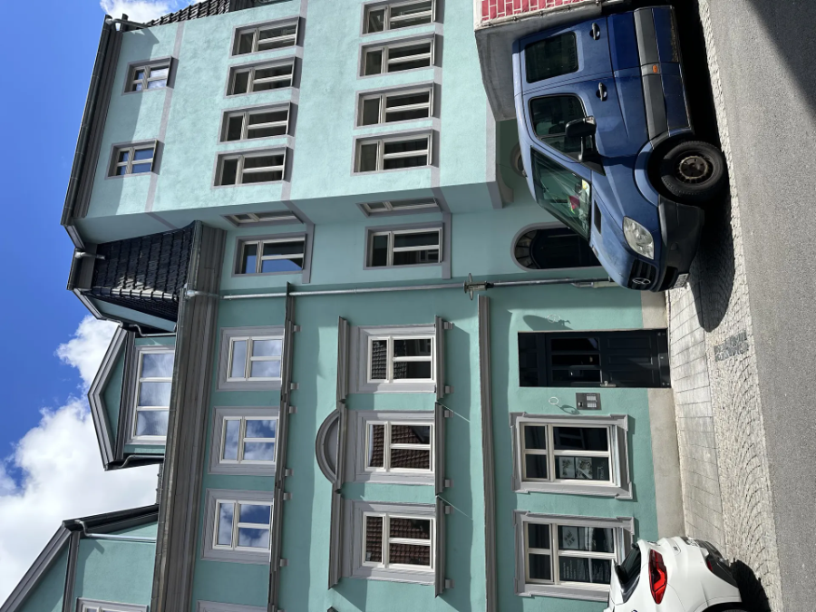
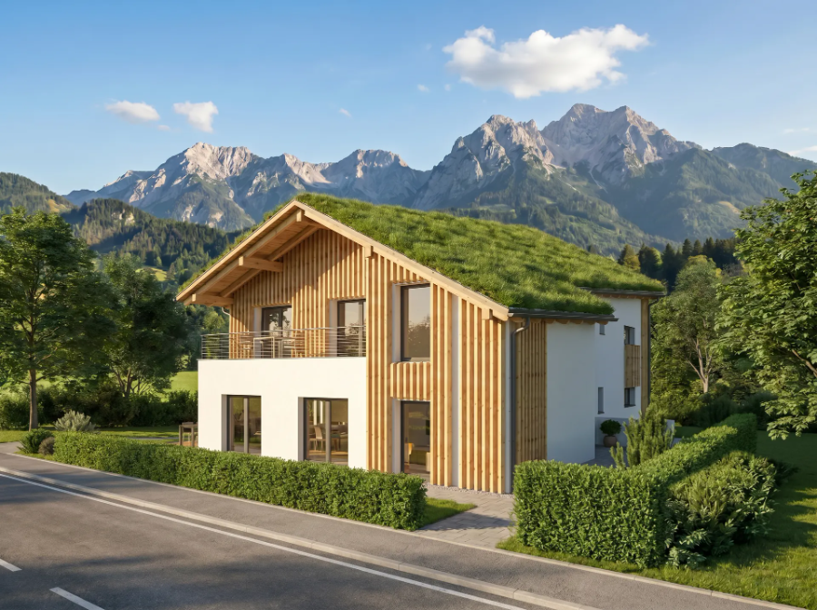
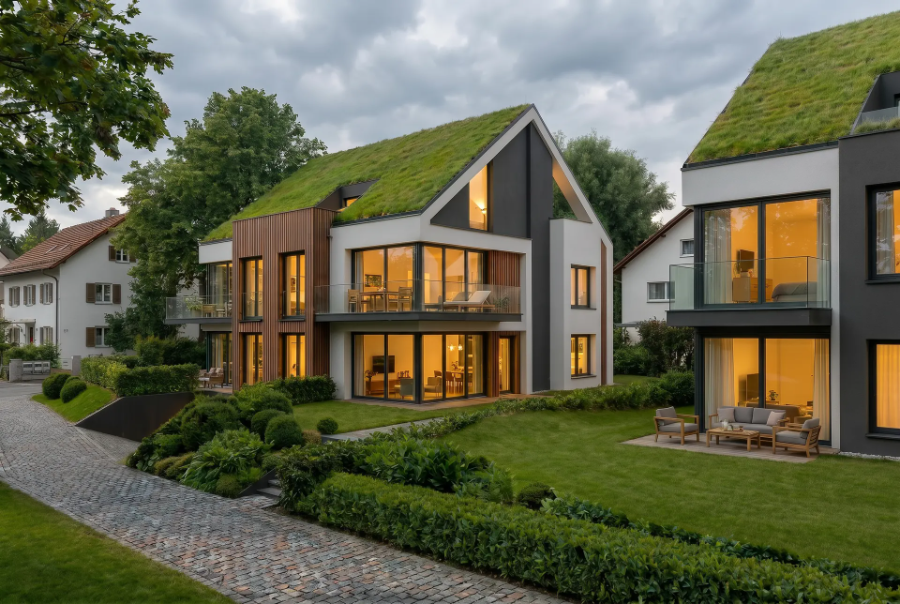
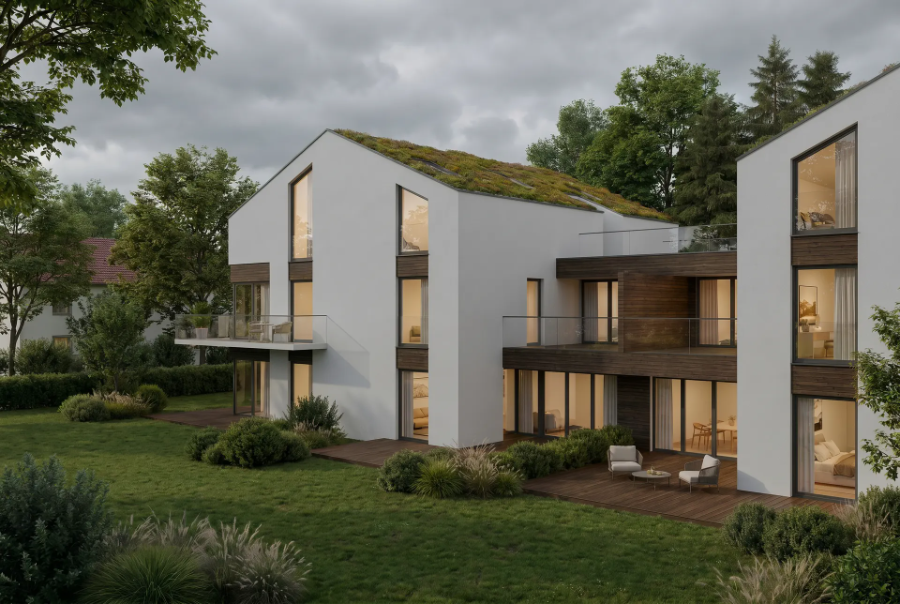

Vom 500-jährigen Fachwerkhaus bis zum Gewerbeneubau mit Gründach. Vier Projekte, die zeigen, was wir unter ganzheitlich verstehen.
Ein rund 400 Jahre altes Bauernhaus — versteckt hinter Vegetation, seit Jahren leerstehend.
Durch den vollständigen Neuaufbau im historischen Bestand, kombiniert mit Wärmepumpe, PV-Anlage und Fußbodenheizung, unterschreitet das Gebäude heute den Energiebedarf eines herkömmlichen Neubaus (KfW 85).
Drei Wohnungen mit eigenen Eingängen, eigenen Gärten und Terrassen — modernes Wohnen mit dem Charme von vier Jahrhunderten.


Ein modernes Firmengebäude, das sich unaufdringlich in die bayerische Landschaft fügt: Arbeitsräume mit 170-Grad-Bergpanorama, Gründach in verschiedenen Varianten — vom Solargründach bis zum markanten Tonnendach — und ein durchdachtes Energiekonzept mit Wärmepumpen, Batteriespeicher und betonkernaktivierter Bodenplatte.
Damit sich der Auftraggeber auf die Expansion seiner Firma konzentrieren konnte, wurden in insgesamt 43 Entscheidungsvorlagen alle wesentlichen Aspekte und Optionen erläutert und konkrete Empfehlungen ausgesprochen. Damit war unser Auftraggeber vollständig in alle wichtigen Entscheidungen eingebunden, ohne laufend auf der Baustelle präsent sein zu müssen. Laufendes Reporting rundete die Betreuung ab.
Fertiggestellt in 11½ Monaten, rund 10 % unter Budget.
Nach drei Jahren gescheiterter Bautätigkeit eines Generalübernehmers übernahmen wir ein Sanierungsprojekt in Coburg — ohne durchgerechnete Statik, ohne Ausführungsplanung, ohne Zeit.
Was folgte, war eine Operation am offenen Herzen: parallele Planung und Bau, Abstützung von 500 Jahre altem Fachwerk und die Umstellung auf CO₂-freie Fernwärme.
Das Ergebnis: 10 Eigentumswohnungen, jede mit einem individuellen Grundriss — barrierefrei, mit Lift, im Energieeffizienzhaus Standard 85 — mitten in Coburg.



Abriss oder Sanierung? Nach intensiver Prüfung von Baurecht, Kosten und Fördermitteln fiel die Entscheidung klar: durchgreifende Sanierung mit Verdopplung der Wohnfläche durch Aufstockung.
Das Ergebnis ist ein Effizienzhaus 55 mit Wärmepumpe, PV, Speicher und Gründach — mit Blick auf die Kirche von Aschau und die Kampenwand.
Optimierte Fördermittel leisten dabei einen wesentlichen Finanzierungsbeitrag.
Fünf Eigentumswohnungen und sechs Ferienwohnungen mit einem durchdachten Möblierungskonzept, das maximale Flexibilität bietet.
Großzügige Balkone, Terrassen und Sitzfenster sorgen für hohen Wohnkomfort — Wärmepumpe, PV-Anlage und Gründach für Zukunftssicherheit.
Ein formschönes Gebäude, das Wohnqualität und Klimabewusstsein verbindet.


Nach mehrjähriger Planung stoppte der Auftraggeber sein Mehrfamilienhaus-Projekt — die Kostenschätzung seines bisherigen Architekten war schlicht zu hoch. Mit CASAGO kam die Wende: Vier Gebäudetypen entwickelt, zwei besondere Varianten mit maximaler Flexibilität bei den Wohnungsgrößen weiterverfolgt.
Gründach, eigenständiges Design und QNG-Standard sorgen dafür, dass Käufer von höheren Förderkrediten und besonderen Abschreibungsmöglichkeiten profitieren.
So wird aus einer festgefahrenen Situation ein wirtschaftlich und gestalterisch überzeugendes Ergebnis.
Gemeinsame Projektrealisierung · in Entwicklung
Anstatt Projektstopp besonders gelungenes Design bei deutlich reduzierten Kosten. Das ist Projektentwicklung!
Unser Auftraggeber hatte nach der Bereitstellung der Kostenschätzung seines bisherigen Architekten Anfang 2026 seine Planung für ein Mehrfamilienhaus nach mehrjähriger Entwicklung gestoppt und sich daraufhin für eine gemeinsame Projektrealisierung mit der Casago GmbH entschieden. Nach Prüfung des Baurechtes, der bisherigen Planung, Bodenuntersuchungen etc. haben wir vier verschiedene Gebäudetypen entwickelt.
Die ursprünglich favorisierte Planung wurde in Abstimmung mit dem Grundstückseigentümer aus Vermarktungsgesichtspunkten eingestellt. Für zwei Gebäudetypen wurde nach Entwicklung von Lösungen für die Stellplätze die Planung forciert. Entstanden sind zwei besondere Objektvarianten mit einer maximalen Flexibilität bei den möglichen Größen der Wohnungen.
Diese Planung befindet sich aktuell in der Abstimmung mit dem Städteplaner. Mit grundsätzlicher Genehmigung der Planung wird bereits mit der Vorvermarktung begonnen und die endgültigen Wohnungsgrößen mit interessierten Käufern abgestimmt.
Das vorgesehene Gründach rundet die besondere Designsprache unserer Architektin ab und trägt durch ein modernes, eigenständiges Design mit eigener Identität zu einer – noch – positiveren Wahrnehmung des Objektes bei. Vorgesehen ist darüber hinaus ein energieeffizientes Gebäude mit QNG-Standard. Damit können Käufer höhere Förderkredite und besondere Abschreibungsmöglichkeiten nutzen.
Projektentwicklung at its best. Und ein hoch zufriedener Umsetzungspartner. Eine solch intensive Projektentwicklung war ihm noch nicht bekannt.
Baubetreuung · 2026
Ein heute zum Freund gewordener, im Ausland lebender Auftraggeber hatte im Jahre 2023 ein Gebäude erworben. Lange Zeit schwankte er zwischen Wiederverkauf, Sanierung und Abriss.
Nach intensiver Prüfung des Baurechts und mehreren Gesprächen mit Gemeinde und Genehmigungsbehörde konnten wir für unseren Auftraggeber eine Planung entwickeln, bei der die bisherige Wohnfläche durch Aufstockung und weitere Maßnahmen mehr als verdoppelt werden konnte.
Die Frage Abriss und Neubau oder Sanierung wurde nach Kostenermittlung und Prüfung möglicher Fördermittel zugunsten einer durchgreifenden Sanierung geklärt.
Trotz einer erst Anfang Februar 2026 erteilten Baugenehmigung wird durch konsequentes Projektmanagement, guter Ausführungsplanung und intensiver Zusammenarbeit mit den ausführenden Firmen bereits im Sommer 2026 unser Auftraggeber seinen ersten Urlaub in dem dann bis auf die Außenanlagen fertigem Gebäude verbringen können.
Das besonders schöne Objekt fügt sich durch das Gründach wohltuend in die Umgebung ein und verschafft durch die geschaffenen Sichtachsen unserem Auftraggeber ein Domizil mit besonders hohem Wohnwert und wunderbaren Ausblicken auf die Kirche von Aschau im Chiemgau sowie die Kampenwand.
Zukunftssicher durch einen Energieeffizienzhausstandard 55 inklusive Wärmepumpe, PV und Speicher.
Ebenfalls stolz sind wir darauf, dass wir die Fördermittel so optimieren konnten, dass diese einen wesentlichen Finanzierungsbeitrag darstellen.
Sanierung Denkmal · 2025
Dieses Projekt war das bisher anspruchsvollste Vorhaben und hat alle vorhandenen Kompetenzen in unterschiedlichsten Bereichen gefordert. Ein von der Eigentümergemeinschaft beauftragter Generalübernehmer war nach rund drei Jahren „Bautätigkeit" noch immer weit von dem Abschluss der Kellerarbeiten entfernt und wurde daher im November 2022 fristlos gekündigt. Nur auf Grund der freundschaftlichen Beziehung zu einzelnen Eigentümern haben wir die Baubetreuung des Projektes Mitte Dezember 2022 übernommen.
Mit der Übernahme haben wir festgestellt, dass es weder eine durchgerechnete Statik noch eine Ausführungsplanung gab. Das vorhandene Konzept hätte zudem sicher nicht die Brandschutzanforderungen sowie des Schallschutzes erfüllt.
Das Gebäude lag in einem Sanierungsgebiet. Die Eigentümergemeinschaft hatte daher mit dem Sanierungsträger der Stadt Coburg eine Sanierungsvereinbarung abgeschlossen. Nur mit Fertigstellung innerhalb der Laufzeit der Sanierungsvereinbarung können die einzelnen Eigentümer die erhöhten Abschreibungen nutzen.
Durch den bereits entstandenen Zeitverzug war es nicht möglich, zuerst die Statik und Ausführungsplanung zu erstellen. Wir mussten daher parallel zur Erstellung der Ausführungsplanung und der Statik die Baumaßnahmen fortführen. Eine „Operation am offenen Herzen".
Durch die Ausführungsplanung wurde deutlich, dass zur Erfüllung aller Brandschutzvorschriften und der Realisierung der Wohnungen wie gekauft eine umfassende Tektur zur Genehmigung eingereicht werden musste. Im Oktober 2023 wurde diese – wie beantragt – erteilt.
Die Sanierungsvereinbarung konnte – trotz Aufhebung der Sanierungssatzung – in Gesprächen mit dem Sanierungsträger und durch Unterstützung der Stadt verlängert werden. Das Objekt konnte somit innerhalb der (verlängerten) Laufzeit fertiggestellt werden.
Es konnte in Gesprächen mit der KfW sichergestellt werden, dass die im Sommer 2019 (!) beantragten und bis Sommer 2022 befristeten Fördermittel im Sommer 2024 – wie beantragt – ausbezahlt wurden. Zusätzlich konnten weitere Fördermittel generiert werden. Auch hier erfolgte die Auszahlung in der beantragten Höhe.
Durch die Fertigstellung innerhalb der (verlängerten) Laufzeit der Sanierungsvereinbarung können die einzelnen Eigentümer die erhöhten Abschreibungen nutzen.
Das Energiekonzept des fristlos gekündigten Generalübernehmers sah die Aufstellung eines BHKW im Gebäude vor. Das angeschaffte BHKW erfüllte auf Grund des Zeitverzugs und zwischenzeitlich neu in Kraft getretener Richtlinien nicht mehr die Anschlussvoraussetzungen.
Obwohl es anfänglich unmöglich schien, ist es uns dennoch gelungen, einen Ausbau der Fernwärme für dieses Projekt zu erreichen. Besonders erfreulich: die Wärme wird durch die Nutzung der Abwärme des Müllheizkraftwerkes erzeugt und ist somit CO₂-frei.
Erschwerend kam hinzu, dass zwei Außenwände vollständig abgetragen und nach Errichtung eines neuen Fundamentes neu errichtet werden mussten. Eine Außenwand hatte zwischen dem oberen und unteren Bereich eine Abweichung von rund 60 Zentimetern. Diese Arbeiten konnte nur mit der Abstützung des rund fünfhundert Jahre alten Fachwerkes mittels Baumstämme erfolgen.
Obwohl ein dem fristlos gekündigten Generalübernehmer sehr nahestehender Eigentümer seine Verpflichtungen nicht mehr erfüllen konnte und eine Erbengemeinschaft die anfallenden Baukosten nicht tragen konnte, konnte mit den weiteren Eigentümern das Projekt bis zur Fertigstellung vorangetrieben werden.
In einer zentralen Lage von Coburg sind heute in einem Energieeffizienzhaus Standard 85 zehn barrierefreie Eigentumswohnungen, jede mit einem individuellen Grundriss, inklusive Lift entstanden. Jede Wohnung hat einen eigenen Balkon bzw. Terrasse.
Neubau Gewerbe · 2024
Unser Auftraggeber benötigte auf Grund der starken Expansion seiner Firma dringend ein deutlich größeres Firmengebäude. Parallel zum Erwerb eines Grundstückes wurden wir mit der Konzeption des Gebäudes beauftragt.
Damit sich der Auftraggeber auf die Expansion seiner Firma konzentrieren konnte, wurden in insgesamt 43 Entscheidungsvorlagen alle wesentlichen Aspekte und Optionen erläutert und konkrete Empfehlungen ausgesprochen. Damit war unser Auftraggeber vollständig in alle wichtigen Entscheidungen eingebunden, ohne laufend auf der Baustelle präsent sein zu müssen. Laufendes Reporting rundete die Betreuung ab.
Bayerische Dörfer, Wiesen, Felder, Auen vor der Kulisse der imposanten Alpenkette — ein modernes funktionales Firmengebäude zu schaffen, das sich unaufdringlich in diese malerische Landschaft fügt und dennoch seinen ganz eigenen Charakter bewahrt, war Anspruch und Ziel bei dem 2024 fertiggestellten Bau in Rott am Inn.
Bei der Planung des Gebäudes erfolgte die Ausrichtung der Räumlichkeiten so, dass das 170-Grad-Bergpanorama möglichst optimal aus allen südseitigen Räumen wahrgenommen werden kann. Die Arbeitsräume wurden Richtung Süden und die funktionalen Räume Richtung Norden ausgerichtet.
Ein wesentliches Gestaltungselement ist das Gründach, das auf den verschiedenen Bereichen des Baues in unterschiedlichster Weise wiederkehrt: Sei es auf der großzügigen Terrasse, als Solargründach auf den Garagen oder als Tonnendach auf dem markanten Haupttrakt.
Insgesamt wurde besonderer Wert auf die Realisierung eines ökologischen Gebäudes mit einem geringen Wärmebedarf und einer möglichst hohen Stromerzeugung zur Abdeckung des eigenen Strombedarfs gelegt. Zum Erreichen dieses Zieles wurde eine betonkernaktivierte Bodenplatte, innengedämmte Betonfertigteilwände, ein Holzständerwerk im Dachgeschoss, zwei effiziente Luft-Wärme-Pumpen, Pufferspeicherung sowie Batteriespeicher kombiniert.
Trotz der Ausrichtung der Arbeitsräume Richtung Süden inklusive einer fast durchgängigen Glasfront im Dachgeschoss reicht die Kombination aus Gründach und Nutzung der Fußbodenheizung zur Kühlung in den Sommermonaten aus. Auf den Einbau einer teuren Klimaanlage konnte verzichtet werden.
Eine besondere Herausforderung waren die Zeitvorgaben. Mit dem Bürgermeister der Gemeinde Rott am Inn konnte eine Lösung gefunden werden, mit der die Bauarbeiten parallel zur Erschließung des neuen Gewerbegebietes begonnen werden konnten.
Obwohl im laufenden Baubetrieb eine weitere Tektur von dem Auftraggeber gewünscht wurde, konnte das Projekt mit einer Nettobauzeit von nur 11½ Monaten bis auf kleinere Restarbeiten mängelfrei übergeben werden. Der ursprüngliche Kostenrahmen wurde — trotz der zusätzlichen Bauherrenwünsche — um rund 10 % unterschritten.
Sanierung Bestand · 2022
Sanierung eines rund 400 Jahre alten, seit Jahren leerstehenden innerstädtisch gelegenen Bauernhauses in Neubeuern. Im Jahre 2019 wurden wir auf das „Hollingerhaus", einem Bauernhaus aus dem 17. Jahrhundert in der Rosenheimer Straße 5, Marktgemeinde Neubeuern, aufmerksam.
Gut versteckt von der Vegetation wurde das Gebäude bisher selbst von in Neubeuern aufgewachsenen Bürgern kaum wahrgenommen.
Das Objekt stand über mehrere Jahre leer. Die Bausubstanz war entsprechend schlecht. Es waren zum Teil keine Decken mehr vorhanden oder bestanden nur aus Dielen. Vorhandene Balkone waren nicht begehbar. Die enge Bebauung und nicht vorhandene Brandmauern bei einem vor rund 80 Jahren angebauten Gebäude stellten besondere Anforderungen beim Brandschutz dar.
Behutsam und im laufenden Dialog mit der früheren Eigentümerfamilie wurde ein Konzept zur Sanierung des Objektes entwickelt. Oberstes Ziel war dabei, den besonderen Charme des Gebäudes zu erhalten und mit zukunftsgerichtetem Wohnen zu kombinieren.
Um den angestrebten Wohnkomfort sicher zu erreichen, haben wir uns bei der Entwicklung des Sanierungskonzeptes für eine umfassende Kernsanierung entschieden. Dies bedeutet, dass das Gebäude mit Ausnahme der tragenden Wände komplett entkernt und nachfolgend unter Berücksichtigung der statischen Vorgaben und des Brandschutzes ein vollständiger Neuaufbau stattfand.
So wurden z. B. über alle Wohnebenen neue Decken eingezogen. Dies erlaubte in Verbindung mit der Anhebung des Kniestockes und der Errichtung eines neuen Dachstuhls über alle Wohnebenen „neue“ Deckenhöhen sowie die Schaffung effizienter Grundrisse und gewährleistete gleichzeitig ausreichenden Schallschutz zu den Nachbarwohnungen.
Alle sanitären Einrichtungen, Ver- und Entsorgungsleitungen sowie die gesamte Elektroinstallation und Regenfallrohre wurden vollständig neu errichtet.
Der Energiebedarf sowie die Frage, welche Energieträger zur Wärmeerzeugung eingesetzt werden, wird in der Zukunft ein besonders herausragender Faktor bei der Bewertung von Immobilien darstellen. Spätestens mit Einführung der CO₂-Abgaben auf fossile Energieträger hat die Politik eindrucksvoll unterstrichen, dass durch Verteuerung klimaschädlichen Erdöls und Erdgases ein Umbau künftiger Wärmeversorgung stattfinden wird.
Um hier für die Käufer eine zukunftssichere Immobilie zu schaffen, beinhaltete das Kernsanierungskonzept alle Maßnahmen zur Erfüllung eines Niedrigenergiehauses Standard KfW 85. Dies bedeutet, dass mit Abschluss der Arbeiten der Energiebedarf dieses 400 Jahre alten Gebäudes niedriger ist als bei einem herkömmlichen Neubau aus dem selben Jahr.
Dieses Ziel wurde erreicht durch die Kombination aus Wärmedämmung, Einbau energiesparender Fenster sowie einer Kombination aus Luft-Wärme-Pumpe und PV-Modulen inklusive eines Speichers zur bestmöglichen Nutzung des auf dem neuen Dach selbst erzeugten Stroms. Für eine möglichst effiziente Nutzung der so erzeugten Wärme wurde in allen Wohnungen eine Fußbodenheizung eingebaut.
Die Pandemie hat die Wichtigkeit des Wohnens noch mehr verdeutlicht. Daher hat jede Wohnung einen eigenen Gartenbereich inklusive je einer mindestens 15 m² großen Terrasse.
Bei der Planung des Projektes war es uns wichtig, dass jeder Bewohner möglichst sein „eigenes“ Reich erhält. Zugleich möglichst wenig „Begegnungsfläche“ vorhanden ist. Zum Erreichen dieser Ziele wurde auf ein gemeinsames Treppenhaus verzichtet. Jede Wohnung verfügt über einen eigenen Eingang.
Es sind insgesamt drei Wohnungen mit einer Wohnfläche zwischen 60 m² bis ca. 166 m² und individuellen Grundrissen mit hoher Flächeneffizienz entstanden. Die Baumaßnahmen begannen im April 2021. Die Übergabe des Objektes erfolgte im Dezember 2022.
Errichtung des neuen Dachs unter Berücksichtigung des Brandschutzes zu dem angebauten Gebäude. Bei den Baumaßnahmen wurden alte, hochmarode Leitungen entdeckt, die von den umliegenden Gebäuden zur Entwässerung des Regenwassers genutzt wurden — es wurde eine gute Lösung mit den Nachbarn gefunden, obwohl kein Leitungsrecht bestand und Schäden an dem Gebäude entstanden. Errichtung eines neuen Kellers inklusive vorhergehender Fundamentverstärkung der Wand.
Neubau Wohnen · in Planung
Unser neuestes Projekt: Für dieses Grundstück hatten die früheren Eigentümer eine Bebauung vorgesehen, die unter heutigen Marktgegebenheiten nicht mehr umsetzbar sein dürfte. Nach intensiven Überlegungen wurde das Grundstück erworben und die bisherige Planung durch unser neues Konzept ersetzt.
Dieses Konzept sieht fünf Eigentumswohnungen sowie sechs Ferienwohnungen vor. Für alle Wohnungen wird ein Möblierungsprogramm mit angeboten, das eine hohe Flexibilität bei der Nutzung der Wohnungen bietet. Dadurch ist es z. B. möglich, eine 2-Zimmer-Wohnung durch diese Möblierung wie eine 3-Zimmer-Wohnung zu nutzen.
Konsequent setzen wir auch bei diesem Projekt auf einen besonders hohen Wohnwert, z. B. in Form großzügiger Balkone und Terrassen und Sitzfenster, sowie einer hohen Zukunftssicherheit durch einen hervorragenden Energieeffizienzhausstandard, Wärmeversorgung mittels Wärmepumpe und PV.
Das formschöne Gebäude wird durch das wiederum vorgesehene Gründach sich positiv auf das Klima im und um das Gebäude auswirken und zu einer positiven Wahrnehmung des neuen Objektes beitragen.